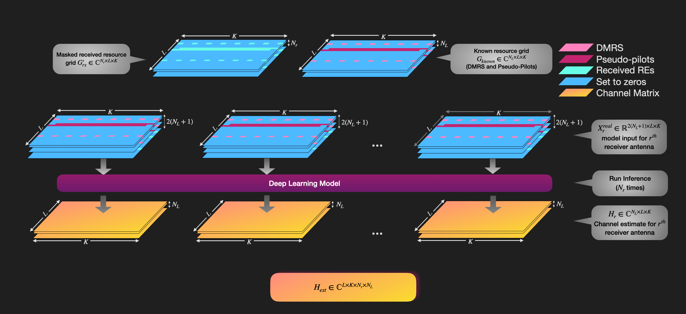

Generating the Dataset for Channel Estimation Training
The first step in this project is generating the datasets used for training, validation, and testing. In this notebook, we construct an OFDM communication pipeline and generate input/output pairs for supervised learning. The inputs consist of received resource grids together with transmitted DMRS information, while the outputs are the corresponding ground-truth channel labels.
The experiments assume a two-layer MIMO configuration with 16 transmit antennas and 4 receive antennas. Under this configuration, each slot may contain up to four code blocks. Each dataset sample is represented as a 6 × 14 × 540 tensor, and the corresponding ground-truth label is a 4 × 14 × 540 tensor.
The figure below illustrates the dataset generation process. Communication over a single slot produces four dataset samples, one for each receive antenna. In this work, we use:
\(N_L = 2\): number of layers
\(L = 14\): number of OFDM symbols per slot
\(K = 540\): number of subcarriers
\(N_r = 4\): number of receive antennas
Because DMRS-based channel estimation is used throughout the pipeline, the effective channel includes the impact of precoding.

We begin by importing the required modules from NeoRadium.
[1]:
import numpy as np
import time, os
from neoradium import BandwidthPart, PDSCH, CdlChannel, AntennaPanel, Grid, random
from ChEstUtils import getRandomPilotInfo, getModelIn, getLabels
The makeDataset function below runs the pipeline and creates samples with 0, 1, 2, or 3 successfully decoded code blocks. When 0 code blocks are used, the sample contains DMRS only. Please refer to the ChEstUtils.py file for the implementation details of the functions getRandomPilotInfo, getModelIn, and getLabels.
[2]:
def makeDataset(numSlots, snrDbs, seed, pdsch, fileName=None, freqDomain=True):
bwp = pdsch.bwp # The only bandwidth part in the carrier
# We don't need to use channel coding in the pipeline during dataset generation. However, we need
# to know the code-block sizes to be able to find the corresponding REs in the grid. The following
# code calculates the code-block sizes for each of the four code blocks.
ldpc = pdsch.getLdpcCodec(coderates=490/1024)
pdsch.initGrid() # Create and initialize PDSCH's internal grid
numBits = pdsch.getBitCapacity() # number of bits available in the resource grid
txBlock = random.bits(ldpc.txBlockSizes[0]) # Create random binary data for txBlock
rateMatchedCBs = ldpc.encode(txBlock, numBits[0], concatCBs=False)
cbSizes = [len(cb) for cb in rateMatchedCBs] # Code block sizes
# Create a random CDL channel-matrix generator
chanGen = CdlChannel.getChanGen(numSlots, bwp, # Number of channels and bandwidth part
profiles="ABCDE", # Randomly pick a CDL profile
delaySpread=300, # 300 ns
ueSpeed=0.5, # 0.5 m/s ≈ 6.7 Hz Doppler
carrierFreq=4e9, # Carrier frequency
txAntenna=AntennaPanel([2,4], polarization="x"), # 16 TX antennas
rxAntenna=AntennaPanel([1,2], polarization="x"), # 4 RX antennas
seed=seed)
samples, labels = [], [] # Initialize samples and labels
t0 = time.monotonic() # Start time for time estimation
random.setSeed(seed)
print(f"Making dataset for {numSlots:,} slots")
for s, channelMatrix in enumerate(chanGen):
pdsch.initGrid() # Create and initialize PDSCH's internal grid
numBits = pdsch.getBitCapacity()[0] # Number of bits available in the resource grid
txBits = random.bits(numBits) # Create random binary data
pdsch.setPdschData(txBits) # Map/modulate the data to the resource grid
precoder = pdsch.getPrecodingMatrix(channelMatrix) # Get the precoder matrix
txGrid = bwp.createGrid(channelMatrix.shape[3]) # Create the transmitted resource grid
pdsch.precodeTo(txGrid, precoder) # Precode PDSCH data into the txGrid
snrDb = snrDbs[s%len(snrDbs)] # Get next SNR value
if freqDomain:
rxGrid = txGrid.applyChannel(channelMatrix) # Apply the channel in the frequency domain
noisyRxGrid = rxGrid.addNoise(snrDb=snrDb) # Add noise
else:
channel = chanGen.curChan # Get the channel model
txWaveform = txGrid.ofdmModulate() # OFDM modulation
maxDelay = channel.getMaxDelay() # Calculate the maximum channel delay
txWaveform = txWaveform.pad(maxDelay) # Pad the waveform with zeros
rxWaveform = channel.applyToSignal(txWaveform) # Apply the channel to the waveform
noisyRxWaveform = rxWaveform.addNoise(snrDb=snrDb, bwp=bwp) # Add noise
offset = channel.getTimingOffset() # Get the timing offset for synchronization
syncedWaveform = noisyRxWaveform.sync(offset) # Synchronize the received waveform
noisyRxGrid = syncedWaveform.ofdmDemodulate(bwp) # OFDM demodulate the synchronized waveform
# pilotIdx contains the inices in the txGrid with known values. Known values could include DMRS
# and a number of successfully decoded code blocks (0..numCBs-1)
pilotIdx = getRandomPilotInfo(pdsch, cbSizes)
newSamples = getModelIn(pilotIdx, pdsch.grid, noisyRxGrid, 10000) # rr x 2*(pp+1) x ll x kk
effChannel = CdlChannel.getEffChannel(channelMatrix, precoder) # Get ground-truth effective channel
newLabels = getLabels( effChannel ) # rr x 2*pp x ll x kk
samples += [ newSamples ]
labels += [ newLabels ]
dt = time.monotonic()-t0 # Calculate the elapsed time
percentDone = (s+1)*100/numSlots # Calculate the completion percentage
# Print progress messages
remainTime = int(np.round(100*dt/percentDone-dt)) # Estimated remaining time
print(f" {int(percentDone)}% done in {int(np.round(dt)):,} Sec., Remaining time: {remainTime:,} Sec.",
end=' \r')
# n: Number of samples in the dataset, pp: Number of ports, ll: Number of OFDM symbols, kk: Number of subcarriers
samples = np.concatenate(samples, axis=0) # n x 2*(pp+1) x ll x kk
labels = np.concatenate(labels, axis=0) # n x 2*pp x ll x kk
if fileName is not None:
np.save(fileName, np.concatenate([samples,labels],axis=1)) # Save the dataset to the specified file
print(f"\r Done. ({dt:.2f} Sec.) Saved to \"{fileName}\". ")
else:
print(f"\r Done. ({dt:.2f} Sec.) ")
return samples, labels
[3]:
bwp = BandwidthPart(numRbs=45, spacing=30) # Create a BandwidthPart object
# Create a 2-layer PDSCH object with type-2 DMRS on symbols 2 and 11
pdsch = PDSCH(bwp, numLayers=2, modulation="16QAM")
pdsch.setDMRS(configType=2, additionalPos=1)
dataPath = "/data/datasets/SelfRefine/" # Replace with the location of your data files
os.makedirs(dataPath, exist_ok=True) # Create the data folder if it does not exist
snrDbs = np.arange(-15,-9,.5) # Set the range of SNR values (in dB)
# Create training, validation, and test dataset files (About 30 GB of disk space needed):
makeDataset(17500, snrDbs, seed=123, pdsch=pdsch, fileName=os.path.join(dataPath,"Train.npy"))
makeDataset(2500, snrDbs, seed=456, pdsch=pdsch, fileName=os.path.join(dataPath,"Valid.npy"))
makeDataset(5000, snrDbs, seed=789, pdsch=pdsch, fileName=os.path.join(dataPath,"Test.npy"));
Making dataset for 17,500 slots
Done. (3135.66 Sec.) Saved to "/data/datasets/SelfRefine/Train.npy".
Making dataset for 2,500 slots
Done. (445.14 Sec.) Saved to "/data/datasets/SelfRefine/Valid.npy".
Making dataset for 5,000 slots
Done. (892.34 Sec.) Saved to "/data/datasets/SelfRefine/Test.npy".
[ ]: